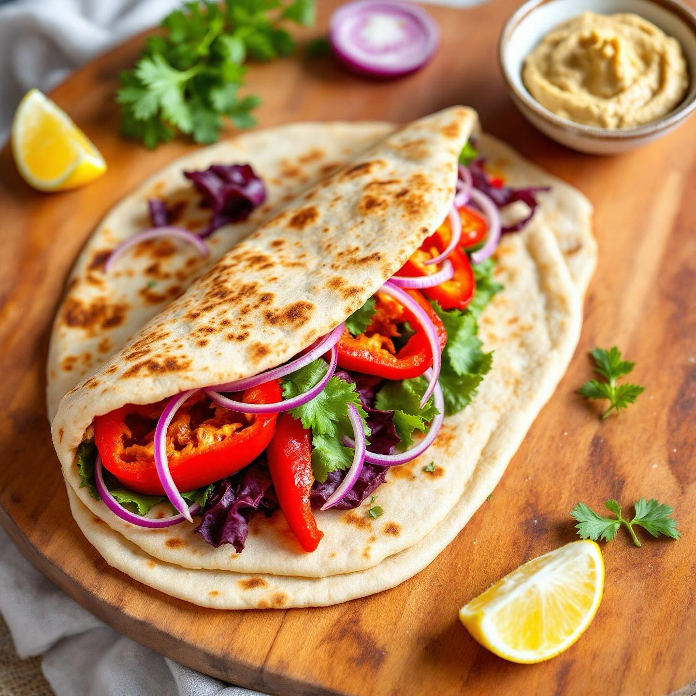

🌯 Piadina Rustica con Peperoni Grigliati e Hummus di Ceci
Ingredienti per l'hummus:
- 400g di ceci precotti (o 200g secchi)
- 2 cucchiai di tahina
- 1 spicchio d'aglio
- Succo di limone
- Olio extravergine d'oliva q.b.
- Sale e paprika q.b.
Ingredienti per la piadina:
- 2 piadine rustiche
- 2 peperoni (uno rosso, uno giallo)
- 1 cipolla rossa
- 100g di radicchio
- Olio extravergine d'oliva
- Sale e pepe q.b.
👨🍳 Preparazione
- Prepara l'hummus: frulla i ceci con tahina, aglio, limone e olio fino a ottenere una crema liscia.
- Taglia i peperoni a strisce e la cipolla a rondelle.
- Griglia i peperoni e la cipolla in padella con un filo d'olio per 10 minuti.
- Scalda le piadine in padella antiaderente per 1 minuto per lato.
- Stendi l'hummus su ogni piadina.
- Aggiungi i peperoni grigliati, la cipolla e il radicchio fresco.
- Chiudi la piadina a metà e servi immediatamente.
💡 Consigli
Questa piadina è perfetta per un pranzo veloce ma nutriente. L'hummus di ceci può essere preparato in anticipo e conservato in frigorifero per 3-4 giorni. Per una versione più piccante, aggiungi un pizzico di peperoncino all'hummus.
🌯 Rustic Flatbread with Grilled Peppers and Chickpea Hummus
Ingredients for the hummus:
- 400g precooked chickpeas (or 200g dried)
- 2 tablespoons tahini
- 1 garlic clove
- Lemon juice
- Extra virgin olive oil to taste
- Salt and paprika to taste
Ingredients for the flatbread:
- 2 rustic flatbreads
- 2 peppers (one red, one yellow)
- 1 red onion
- 100g radicchio
- Extra virgin olive oil
- Salt and pepper to taste
👨🍳 Preparation
- Prepare the hummus: blend chickpeas with tahini, garlic, lemon and oil until smooth.
- Cut the peppers into strips and the onion into rounds.
- Grill the peppers and onion in a pan with a drizzle of oil for 10 minutes.
- Heat the flatbreads in a non-stick pan for 1 minute per side.
- Spread the hummus on each flatbread.
- Add the grilled peppers, onion and fresh radicchio.
- Fold the flatbread in half and serve immediately.
💡 Tips
This flatbread is perfect for a quick but nutritious lunch. The chickpea hummus can be prepared in advance and stored in the refrigerator for 3-4 days. For a spicier version, add a pinch of chili to the hummus.
🌯 Piadina Rustica con Pimientos Asados y Hummus de Garbanzos
Ingredientes para el hummus:
- 400g de garbanzos precocidos (o 200g secos)
- 2 cucharadas de tahina
- 1 diente de ajo
- Zumo de limon
- Aceite de oliva virgen extra al gusto
- Sal y paprika al gusto
Ingredientes para la piadina:
- 2 piadinas rusticas
- 2 pimientos (uno rojo, uno amarillo)
- 1 cebolla roja
- 100g de radicchio
- Aceite de oliva virgen extra
- Sal y pimienta al gusto
👨🍳 Preparacion
- Prepara el hummus: tritura los garbanzos con tahina, ajo, limon y aceite hasta obtener una crema lisa.
- Corta los pimientos en tiras y la cebolla en rodajas.
- Asa los pimientos y la cebolla en una sarten con un hilo de aceite durante 10 minutos.
- Calienta las piadinas en una sarten antiadherente 1 minuto por lado.
- Extiende el hummus sobre cada piadina.
- Anade los pimientos asados, la cebolla y el radicchio fresco.
- Cierra la piadina por la mitad y sirve inmediatamente.
💡 Consejos
Esta piadina es perfecta para un almuerzo rapido pero nutritivo. El hummus de garbanzos se puede preparar con anticipacion y conservar en el frigorifico durante 3-4 dias. Para una version mas picante, anade una pizca de guindilla al hummus.
🌯 Pita Rustica com Pimentos Grelhados e Hummus de Grao-de-Bico
Ingredientes para o hummus:
- 400g de grao-de-bico pre-cozido (ou 200g seco)
- 2 colheres de sopa de tahina
- 1 dente de alho
- Sumo de limão
- Azeite extra virgem a gosto
- Sal e paprika a gosto
Ingredientes para a pita:
- 2 pitas rusticas
- 2 pimentos (um vermelho, um amarelo)
- 1 cebola roxa
- 100g de radicchio
- Azeite extra virgem
- Sal e pimenta a gosto
👨🍳 Preparacao
- Prepare o hummus: triture o grao-de-bico com tahina, alho, limao e azeite ate obter um creme liso.
- Corte os pimentos em tiras e a cebola em rodadas.
- Grelhe os pimentos e a cebola numa frigideira com um fio de azeite durante 10 minutos.
- Aqueca as pitas numa frigideira antiaderente 1 minuto de cada lado.
- Espalhe o hummus sobre cada pita.
- Junte os pimentos grelhados, a cebola e o radicchio fresco.
- Dobre a pita ao meio e sirva imediatamente.
💡 Dicas
Esta pita e perfeita para um almoco rapido mas nutritivo. O hummus de grao-de-bico pode ser preparado antecipadamente e conservado no frigorifico durante 3-4 dias. Para uma versao mais picante, junte uma pitada de malagueta ao hummus.
🌯 Rustikales Fladenbrot mit gegrillten Paprikaschoten und Kichererbsen-Hummus
Zutaten fuer den Hummus:
- 400g vorgekochte Kichererbsen (oder 200g getrocknete)
- 2 Esslöffel Tahini
- 1 Knoblauchzehe
- Zitronensaft
- Natives Olivenoel extra nach Geschmack
- Salz und Paprika nach Geschmack
Zutaten fuer das Fladenbrot:
- 2 rustikale Fladenbrote
- 2 Paprikaschoten (eine rot, eine gelb)
- 1 rote Zwiebel
- 100g Radicchio
- Natives Olivenoel extra
- Salz und Pfeffer nach Geschmack
👨🍳 Zubereitung
- Den Hummus zubereiten: Kichererbsen mit Tahini, Knoblauch, Zitrone und Oel mixen, bis eine glatte Creme entsteht.
- Die Paprikaschoten in Streifen und die Zwiebel in Scheiben schneiden.
- Die Paprikaschoten und die Zwiebel in einer Pfanne mit einem Schuss Oel 10 Minuten grillen.
- Die Fladenbrote in einer beschichteten Pfanne 1 Minute pro Seite erhitzen.
- Den Hummus auf jedes Fladenbrot streichen.
- Die gegrillten Paprikaschoten, die Zwiebel und den frischen Radicchio hinzufuegen.
- Das Fladenbrot falten und sofort servieren.
💡 Tipps
Dieses Fladenbrot ist perfekt fuer ein schnelles aber nahrhaftes Mittagessen. Der Kichererbsen-Hummus kann im Voraus zubereitet und 3-4 Tage im Kuehlschrank aufbewahrt werden. Fuer eine schaerfere Version eine Prise Chili zum Hummus hinzufuegen.
🌯 Ρουστίκ Πίτα με Ψητές Πιπεριές και Χούμους Ρεβιθιών
Συστατικά για το χούμους:
- 400g προψημένα ρεβίθια (ή 200g ξερά)
- 2 κουταλιές της σούπας ταχίνι
- 1 σκελίδα σκόρδου
- Χυμός λεμονιού
- Έξτρα παρθένο ελαιόλαδο κατά βούληση
- Αλάτι και πάπρικα κατά βούληση
Συστατικά για την πίτα:
- 2 ρουστίκ πίτες
- 2 πιπεριές (μία κόκκινη, μία κίτρινη)
- 1 κόκκινο κρεμμύδι
- 100g ραντίτσιο
- Έξτρα παρθένο ελαιόλαδο
- Αλάτι και πιπέρι κατά βούληση
👨🍳 Εκτέλεση
- Προετοιμάστε το χούμους: χτυπήστε τα ρεβίθια με ταχίνι, σκόρδο, λεμόνι και λάδι μέχρι να γίνει λείο.
- Κόψτε τις πιπεριές σε λωρίδες και το κρεμμύδι σε ροδέλες.
- Ψήστε τις πιπεριές και το κρεμμύδι σε ένα τηγάνι με μια σταλιά λάδι για 10 λεπτά.
- Ζεστάνετε τις πίτες σε ένα αντικολλητικό τηγάνι για 1 λεπτό από κάθε πλευρά.
- Απλώστε το χούμους σε κάθε πίτα.
- Προσθέστε τις ψητές πιπεριές, το κρεμμύδι και το φρέσκο ραντίτσιο.
- Διπλώστε την πίτα στη μέση και σερβίρετε αμέσως.
💡 Συμβουλές
Αυτή η πίτα είναι τέλεια για ένα γρήγορο αλλά θρεπτικό μεσημεριανό. Το χούμους ρεβιθιών μπορεί να προετοιμαστεί από πριν και να διατηρηθεί στο ψυγείο για 3-4 ημέρες. Για μια πιο πικάντικη εκδοχή, προσθέστε μια πρέζα τσίλι στο χούμους.